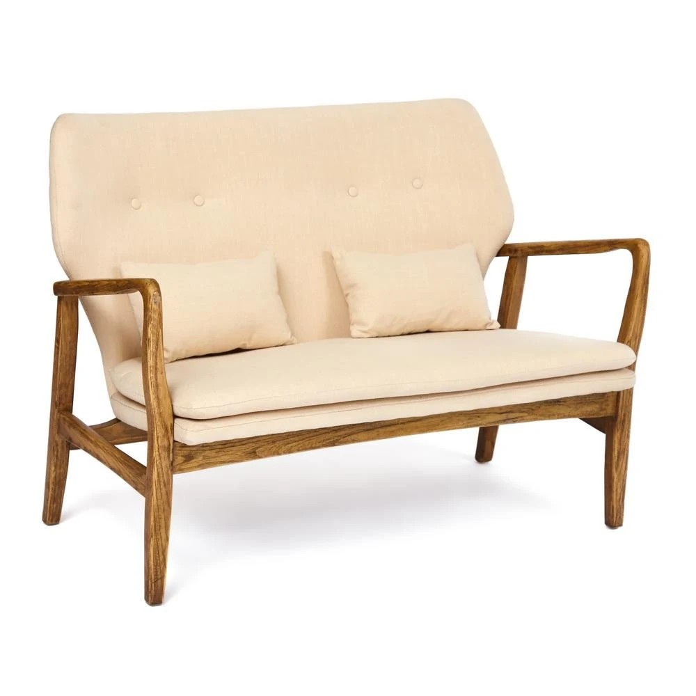

Журнал · редакционный пример
Уют как искусство: когда детали рассказывают историю
Как дерево, ткань и спокойная палитра помогают собрать пространство для жизни.

Интерьер складывается из цвета, света, предметов и привычек. Натуральные поверхности не спорят между собой, а становятся фоном для личной истории дома.
Мягкая палитра и выразительная фактура
В мебели из дерева, льна и ротанга особенно заметны нюансы: рисунок волокон, переплетение нитей, лёгкие оттенки натуральной отделки. Всё это важно и для эстетики, и для удобства выбора.
Каталог должен не только показывать предмет, но и помогать представить его в собственном доме.
Сохранить контент, обновить представление
Этот текст написан для независимой демонстрации и не воспроизводит статью бренда. В будущем сохраняем оригинальные тексты, даты публикации, авторство, URL и ссылки — после проверки прав, структуры и SEO-настроек. Не заменяем накопленные страницы случайно сгенерированными материалами.